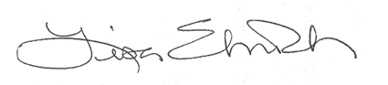

I make clay objects that are influenced by nature.
Embedded in the layers of intention and accident are the ideas that inspire my work.

"Falling"
Large Scale Installation
4,000+ Porcelain Leafs
Sculpture Commissioned by Craig Hall for an office building in Frisco, Texas
Photos by Harrison Evans


"Life Cycle"
Porcelain Leafs Sculpture
2.2.2. Seoul-Dallas-Seoul
Tong-In Gallery, Seoul, Korea
Keun Joong Kim + Sun Doo Kimn
Lisa Ehrich + Rick Mawell
Hyun Ju Chung + Chong Keun Chu
Lisa Ehrich + Rick Mawell
Hyun Ju Chung + Chong Keun Chu


"Season
of Change"
Porcelain & Stoneware
9'x 6'x 7"


Drawing
from Nature
Porcelain & Steel Band
11'x2'x2'


Black Cloud
Black Stoneware
6.5' x38" x9"


Leaf Vessels
Porcelain + Stoneware


Sculptures


Rock Sculptures


Wall Sculptures


Lisa Ehrich
Curriculum Vita
Education
1981 - MFA University of North Texas, Denton, TX
1978 - BFA University of Texas, Austin, TX
Teaching Experience
2020-2022 - Brookhaven Campus, Dallas College - Faculty
1983-2021 - Brookhaven College, Dallas - Chair/Faculty, School of the Arts
1981-1982 - Tarrant Community College - Adjunct Faculty, Fine Arts
1979-1981 - University of North Texas - Teaching Associate, Fine Arts
Teaching Experience
Field Courses Abroad
2019 - La Meridiana, Certaldo, Italy, Exploring the Figure, Donna Polseno Workshop
2017 - La Meridiana, Certaldo, Italy, Porcelain Tableware, Richard Hensley Workshop
2015 - La Meridiana, Certaldo, Italy, From the Wall to the Table, Donna Polseno Workshop
2013 - La Meridiana, Certaldo, Italy Garden Objects, Donna Polseno Workshop
2002 - Vermont Carving and Sculpture Studio, Rutland, VT: Figurative Clay Sculpture
2001 - Vermont Carving and Sculpture Studio, Rutland, VT: Marble Carving
1996 - New Mexico Field Course,Sante Fe, NM: Ceramics
1988 - British Fiend Course, London & environs: Drawing
1985 - Italian Fiend Course, Rome & environs: Drawing
Guest Artist Workshops & Residency
2022 - Griffin street Studios, Maxwell Studio, Dallas, TX
2021 - Griffin street Studios, Maxwell Studio, Dallas, TX
2021 - Brookhaven College Faculty Exhibition, Forum Gallery, Dallas, TX
2019 - InterChange, Complex Museum at the University of Port Harcourt, Nigeria, Africa
2019 - Griffin Street Studios, Maxwell Studio, Dallas, TX
2019 - Brookhaven College Faculty Exhibition, Forum Gallery, Dallas, TX
2018 - On Evolution and Human Touch, Mary Tomas Gallery, Dallas, TX
2018 - On Evolution and Human Touch, Tong-In Gallery, Seoul, N. Korea
2018 - Griffin Street Studios, Maxwell Studio, Dallas, TX
2018 - Brookhaven College Faculty Exhibition, Forum Gallery, Dallas, TX
2017 - Hall Group Commission, Hall Park, Frisco, TX
2017 - Griffin Street Studios, Maxwell Studio, Dallas, TX
2017 - Brookhaven College Faculty Exhibition, Forum Gallery, Dallas, TX
2016 - Art of the Pot, Cera-mix Studio, Austin, TX
2016 - Griffin Street Studios, Maxwell Studio, Dallas, TX
2016 - Brookhaven College Faculty Exhibition, Forum Gallery, Dallas, TX
2015 - Modartist Gallery, Dallas, TX
2015 - Couples, Bath House Gallery Dallas, TX
2015 - Clay Invitational, New Bedford Museum of Art, New Bedford, CT
2015 - Griffin Street Studios, Maxwell Studio, Dallas, TX
2015 - Brookhaven College Faculty Show, Forum Gallery, Dallas, TX
2014 - Woodfired, Craft Guild of Dallas, Addison, TX
2014 - 20th Anniversary Exhibition, McKinney Avenue Contemporary, Dallas, TX
2014 - Texas Jewish Art Association, Jewish Community Center, Dallas, TX
2014 - Griffin Street Studios, Maxwell Studio, Dallas, TX
2014 - Brookhaven College Faculty Exhibition, Forum Gallery, Dallas, TX
2013 - Stoked in Texas, NCECA, Houston, TX
Meadows Gallery, University of Texas, Tyler
2013 - Griffin Street Studios, Maxwell Studio, Dallas, TX
2013 - Brookhaven College Faculty Exhibition, Forum Gallery, Dallas, TX
2012 - Forms of Expression: A Survey in Contemporary Clay, Middle Tennessee State U.
2012 - Griffin Street Studios, Maxwell Studio, Dallas, TX
2012 - Brookhaven College Faculty Exhibition, Forum Gallery, Dallas, TX
2011 - Cedars Studios, Maxwell Studio, Dallas, TX
2011 - Van Court Installation, Private Commission, Dallas, TX
2011 - Kittle Installation, Private Commission, Dallas, TX
2011 - Brookhaven College Faculty Exhibition, Forum Gallery, Dallas, TX
2011 - Watershed Center for Ceramic Arts - Newcastle, Maine
2010 - Cedars Studios, Maxwell Studio, Dallas, TX
2010 - MOTA Exhibition, Uptown Chabad, Dallas, TX
2010 - Brookhaven College Faculty Exhibition, Forum Gallery, Dallas, TX
2009 - Reunion Exhibition, Practical Arts Gallery, Pheonix, AZ
2009 - Natural Tendencies, VAL, Lewisville, TX
2009 - Organica, Mary Tomas Gallery, Dallas, TX
2009 - Station Designer, Farmers Branch DART Station, Farmers Branch, TX
2009 - Recent Works by DCCCD Clay Artists, El Centro College, Dallas, TX
2009 - Brookhaven College Faculty Exhibition, Forum Gallery, Dallas, TX
2008 - 3 Clay Sculptors, Galveston Community College, Galveston, TX
2008 - Academia: Pushing the Boundary, McKinney Avenue Contemporary, Dallas , TX
2008 - Hunter Installation, Private Commission, Dallas, TX
2008 - Brookhaven College Faculty Exhibition, Forum Gallery, Dallas, TX
2007 - Line to Volume, National Council for the Education of Ceramic Arts, Louisville, KY
2007 - New Work, East Oklahoma University, University Gallery, Ada, OK
2007 - CraftHouston: Texas, Houston Center for Contemporary Craft, Traveling Exhibition
2007 - Station Designer, Farmers Branch DART Station
2007 - Brookhaven College Faculty Exhibition, Forum Gallery, Dallas, TX
2006 - San Angelo Clay National, San Angelo Museum of Art
2006 - National Clay Invitational, University of Texas Gallery, Tyler
2006 - Brookhaven College Faculty Exhibition, Forum Gallery, Dallas, TX
2005 - Form, Fire, & Fiction, Plano Art Center, Plano, TX
2005 - Brookhaven College Faculty Exhibition, Forum Gallery, Dallas, TX
2004 - Texas Clay Art, Southwest Texas State University, San Marcos
2004 - Surfaces, Mountain View College, Dallas, TX
2004 - Brookhaven College Faculty Exhibition, Forum Gallery, Dallas, TX
2003 - Attachments, Irving Art Center, Irving, TX
2003 - Leah, Stella, & Lisa Ehrich, Brookhaven College, Dallas, TX
2003 - Brookhaven College Faculty Exhibition, Forum Gallery, Dallas, TX
2002 - New Work, Cidnee Patrick Gallery, Dallas, TX
2002 - Texas Mud, The Contemporary, Dallas, TX
2002 - The Clay & Glass Show, Corning College, Corning, NY
2002 - Brookhaven College Faculty Exhibition, Forum Gallery, Dallas, TX
2001 - Made in Texas, New Braunfels Museum of Art, New Braunfels
2001 - Critic’s Choice, Dallas Visual Art Center, Dallas, TX
2001 - Brookhaven College Faculty Exhibition, Forum Gallery, Dallas, TX
2000 - New Work, Edith Baker Gallery, Dallas, TX
2000 - Clay National Invitational, Texas A & M, Commerce, TX
2000 - Brookhaven College Faculty Exhibition, Forum Gallery, Dallas, TX

Selected Exhibitions & Commissions
2019
Interchange, Complex Museum, University of Port Harcourt, Nigeria
Interchange, South Dallas Cultural Center, Dallas, TX
Griffin Street Studios, Maxwell Studio, Dallas, TX
Brookhaven College Faculty Exhibition, Dallas TX
2018
One Evolution and Human Touch, Tong-In Gallery, Seoul, Korea
2.2.2. Dallas-Seoul-Korea, Mary Tomas Gallery, Dallas, TX
Griffin Street Studios, Maxwell Studio, Dallas, TX
Brookhaven College Faculty Exhibition, Dallas, TX
2017
Craig Hall Commission, Installation, Frisco TX
Latino Cultural Center, Invitational, Dallas, TX
Craig Hall Office Park, Permanent Installation, Frisco, TX
Plano Art Center, Invitational, Plano, TX
Griffin Street Studios, Maxwell Studio, Dallas, TX
Brookhaven College Faculty Exhibition, Dallas, TX
2016
Art of the Pot, Cera-mix Studio, Austin, TX
Griffin Street Studios, Maxwell Studio, Dallas, TX
2015
Clay Invitational, New Bedford Museum of Art, New Bedford, CT
Modartist Gallery, Dallas, TX
Couples, Bath House Gallery, Dallas, TX
Griffin Street Studios, Maxwell Studio, Dallas, TX
2014
Woodfired, Crat Guild of Dallas, Addison, TX
20th Anniversary Exhibition, McKinney Avenue Contemporary, Dallas, TX
Texas Jewish Art Association, Jewish Community Center, Dallas, TX
Griffin Street Open Studios, Maxwell Studio, Dallas, TX
2013
Stoked in Texas, NCECA, Houston, TX
Meadows Gallery, University of Texas, Tyler, TX
Griffin Street Studios, Maxwell Studio, Dallas, TX
Publications
Ceramics
Mastering the Craft, Richard Zakin
p.183, 2001
Ceramics Monthly
“Urban Wood Kiln"
p.35, Mar. 1999
The Best of New Ceramic Art
Hand Books, Inc.
p.18, 1997
Hand Formed Ceramics
Richard Zakin
p.86, 1995
Ceramics, Art & Perception
“NCECA Clay National”, Dec. 1993
Contact Lisa Ehrich
I make clay objects that are influenced by nature. Embedded in the layers of intention and accident are the ideas that inspire my work: the sensuality of form, implied volume, human touch to a natural object, symbols of fragility, healing, and regeneration.
My experience of working with clay cannot be separated from my life experience which includes a passion for research and travel. My eyes, head, and spirit have been filled with the images of a ceramic world that include ancient skills, timeless forms, conceptual and symbolic content. Italian niches, Stonehenge, the Canadian Rockies, my backyard garden and much more reside in my subconscious well that feeds my imagery and symbolism.
I move from throwing to handbuilding seeking the process that best actualizes the ideas that emerge. My surfaces are intended to reveal the form, to feel like the skin of an object, appearing as a natural consequence of its being. I focus on atmospheric firings to achieve the desired effects and often use sandblasting a final step. A medley of other materials is sometimes employed to complete a concept which results in a visually poetic combination.